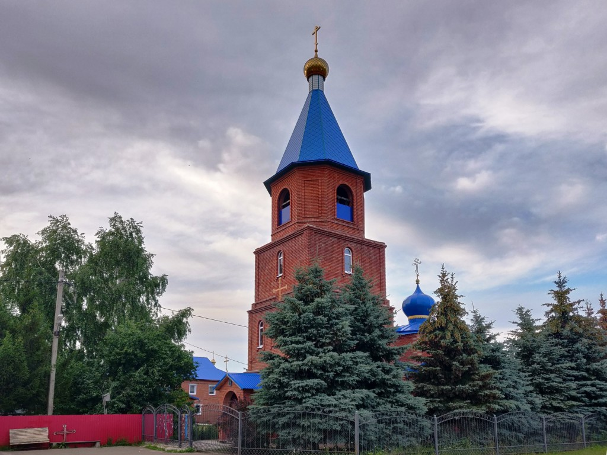

Альке́евский райо́н (тат. Әлки́ районы́) — административно-территориальная единица и муниципальное образование (муниципальный район) в составе Республики Татарстан Российской Федерации площадью 1726,8 км²[6]. Территория района включает 70 населенных пунктов, поделённых на 21 сельское поселение. Административный центр — село Базарные Матаки[7]. Известно, что территория района в эпоху каменного века являлась одним из центров заселения людей в Среднем Поволжье. Так, среди археологических памятников тех времён, особенно выделяются Старонохратское, Староматакское, Тюгульбаевское и другие городища, 126 курганов и 130 селищ, которые имеют особую историческую ценность[9]. Позже территория современного района входила в государство волжских булгар. Существует предание, согласно которому название края произошло от булгарского Алп-батыра[11]. В 1906 году рядом с деревней Балыкуль бывшего Спасского уезда Казанской губернии местным жителем Магомедом-Гали Мостюковым был найден клад из ювелирных украшений домонгольского периода (хранится в ГИМе. Инв. №44222). Среди находок — гривна вместе с десятью плетёными серебряными браслетами и девятью слитками серебра[14]. До 1920 года территория входила в состав Спасского уезда Казанской губернии, следующее десятилетие была в Спасском кантоне ТАССР. Алькеевский район был образован 10 августа 1930 года. В феврале 1935 года из южной и западной частей района был выделен Кузнечихинский район[15]. Первоначально административным центром было село Алькеево (сейчас — Нижнее Алькеево), от которого произошёл современный топоним района. В 1937 году (по другим данным — в 1932-м[16]) райцентр перенесли в Базарные Матаки. В феврале 1944-го из южной части Алькеевского и восточной части Кузнечихинского районов образовали Юхмачинский район (упразднённый в 1956-м). В октябре 1960-го в состав Алькеевского передали бо́льшую часть территории упразднённого Кузнечихинского района. 1 февраля 1963 года в рамках реформирования административно-территориального устройства Татарстана Алькеевский район упразднили, территорию передали в состав Куйбышевского, но уже через два года — 12 января 1965-го — район восстановили в текущих границах[17]. В 1999 году главой района был назначен Давлетшин Фердинат Мидхатович, который занимал эту должность до 2014 года[18]. В сентябре 2015-го этот пост занял Никошин Александр Фёдорович, он руководит до сих пор.
